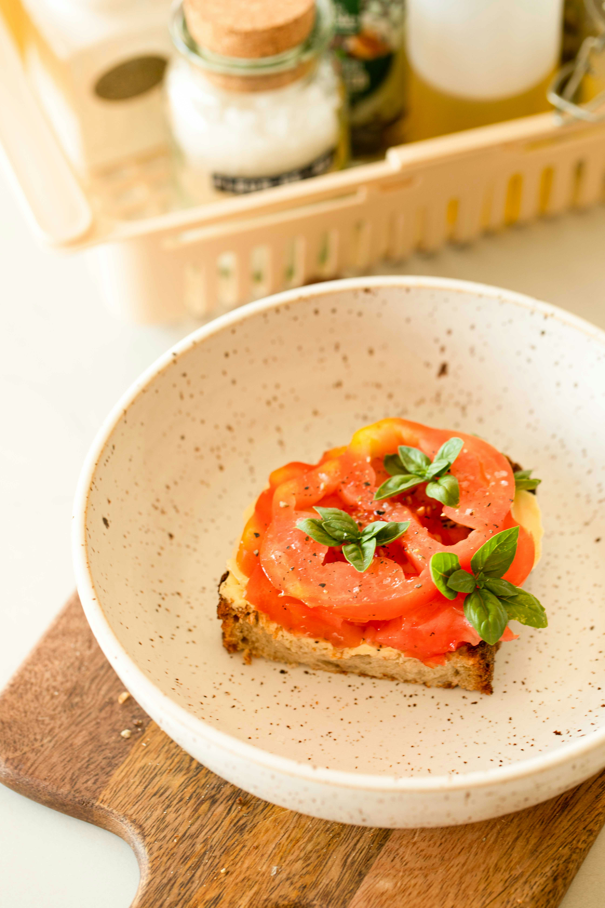

Baked Tomato Slices
Home

Description
Sun-ripened tomatoes, thinly sliced and baked to perfection.
Each bite offers a burst of sweet, savory flavor, with a
hint of herbs and a tender, yielding texture.
A simple yet
elegant side dish or light appetizer.
Ingredients
- Large ripe tomatoes
- Olive oil
- Dried oregano
- Garlic powder
- Black pepper
- fresh parsley (optional, for garnish)
Recipe
- Preheat your oven to 375°F (190°C).
- Wash and slice the tomatoes into 1/4-inch thick rounds.
- Arrange the tomato slices in a single layer on a baking sheet
lined with parchment paper.
- Drizzle the tomato slices generously with olive oil.
- Sprinkle evenly with dried oregano, garlic powder, salt, and
black pepper.
- Bake for 20-25 minutes, or until the tomatoes are tender and
slightly caramelized at the edges.
- Remove from the oven and, if desired, garnish with fresh
chopped parsley before serving.